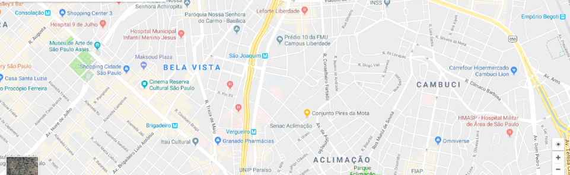

Sobre Nós
Todo dia, seguimos para o trabalho esperando fazer duas coisas: dividir um ótimo café com nossos amigos e ajudar a tornar o mundo um pouquinho melhor. Já era assim quando a primeira Santo Antônio abriu em 1971 e continua sendo assim até hoje.
Nossa missão é inspirar e nutrir o espírito humano – uma pessoa, uma xícara de café e uma comunidade de cada vez.
Atualmente, com mais de 15 mil lojas em 50 países, a Starbucks é a mais importante empresa mundial de torrefação e venda de café especial. E, com cada xícara, nos esforçamos para dar vida ao nosso legado e a uma experiência excepcional.
Venha nos Visitar!
Rua João da Roça, 327 - Jardim das Maravilhas - Ipê Amarelo - SC
